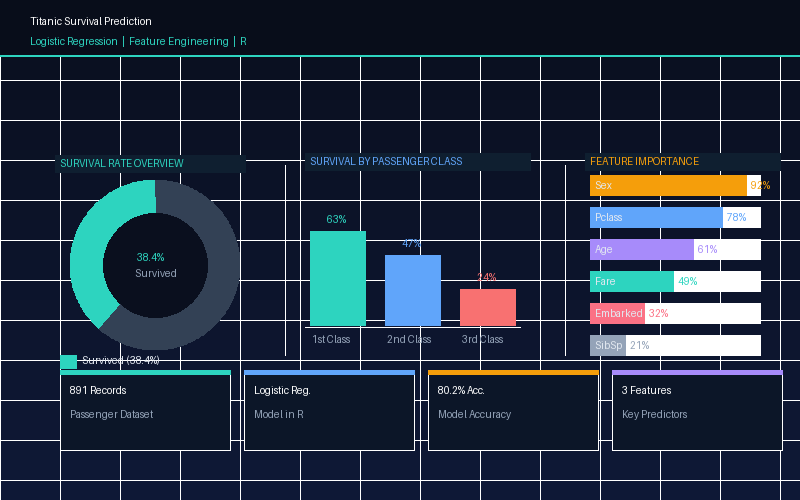
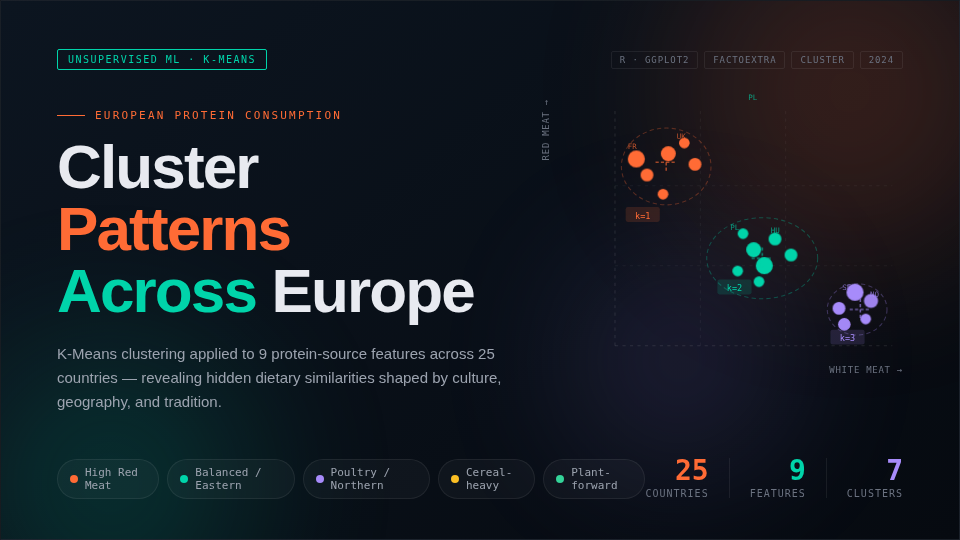
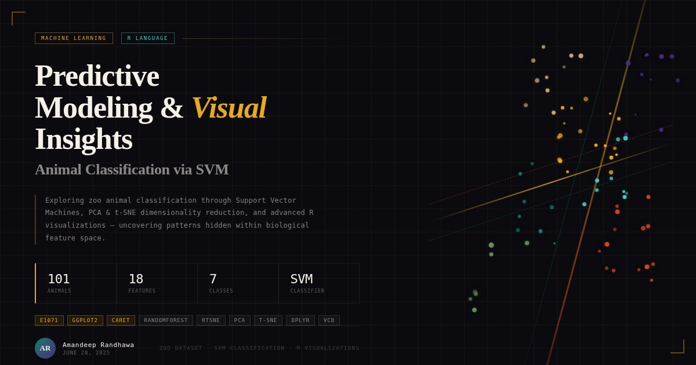
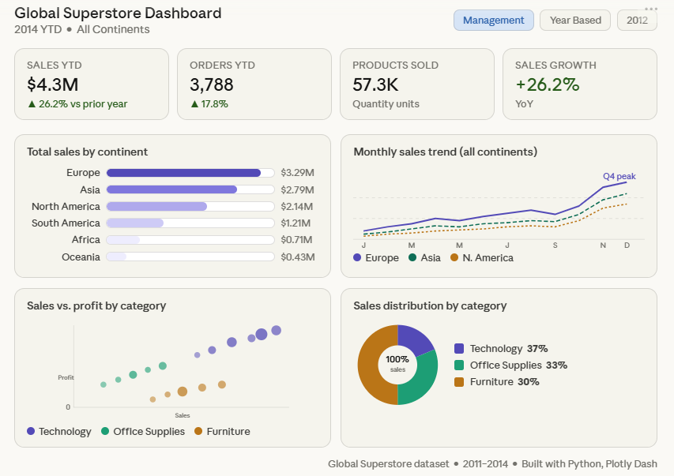
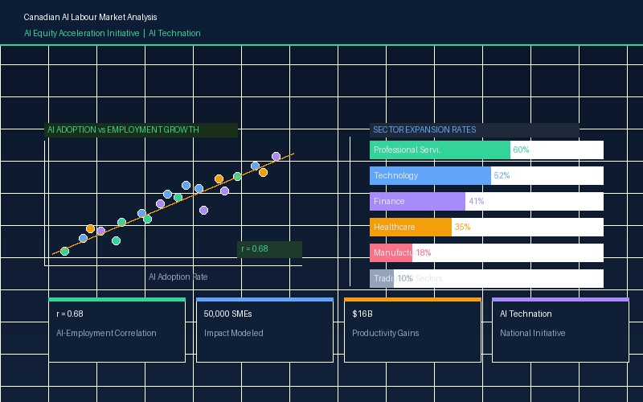
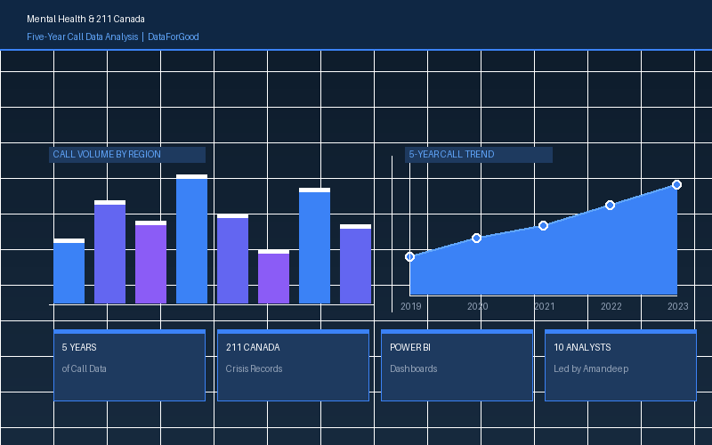

Programming & Analytics
Python | R | SQL | Advanced Excel | Jupyter Notebook
Data Science Professional
Machine Learning • Artificial Intelligence • Agentic AI
Building data-driven solutions through analytics, intelligent systems, and visual storytelling
I'm a data science professional with experience working with complex Canadian and global datasets — from demographic and labour market data to consumer behaviour and community services research.
My work sits at the intersection of technical rigour and human insight. I've analyzed population datasets from Statistics Canada and IRCC, built psychographic and behavioural segmentation models, and led analytics projects that inform real policy and business decisions. I believe data is most valuable when it tells a story that people can act on — not just one that analysts can admire.
I work primarily in Python, SQL, and R, and I'm equally comfortable building ETL pipelines, developing predictive models, or presenting findings to a non-technical audience. I'm driven by curiosity about how people and communities change over time — and by the conviction that better data leads to better decisions.
Building predictive models and analytical solutions from real-world data
Exploring intelligent systems that improve decision-making and automation
Designing workflows and AI-assisted systems that act with context and purpose
Analyzing Canadian population data to uncover behavioural and geographic patterns at the neighbourhood level
Communicating patterns and performance through dashboards and visual storytelling
Using statistical and machine learning techniques to forecast trends and outcomes
Platforms, programming tools, BI applications, productivity tools, and operating systems I work with
 Python
Python
 R
R
 SQL
SQL
 Pandas
Pandas
 NumPy
NumPy
 Jupyter
Jupyter
 GitHub
GitHub
 Docker
Docker
 Snowflake
Snowflake
 Apache Spark
Apache Spark
 Hadoop
Hadoop
A modern toolkit for data science, analytics, visualization, and intelligent systems
Python | R | SQL | Advanced Excel | Jupyter Notebook
Regression | Classification | Clustering | Predictive Modeling | Model Evaluation
ETL Workflows | Data Pipelines | Data Cleaning | Snowflake | Hadoop | Spark | HiveQL
Power BI | Tableau | Dashboard Development | KPI Reporting | Data Storytelling | Looker
AWS | Microsoft Azure | Docker | Snowflake | Windows | macOS | Linux
Statistics Canada | IRCC Datasets | Labour Market Analysis | Small-Area Geography | Population Segmentation | Census Data
Agile Workflows | Reporting Frameworks | Process Documentation | Data Governance | Reproducible Analysis
Stakeholder Communication | Team Leadership | Cross-functional Collaboration | Analytical Thinking | Problem Solving | Attention to Detail
A curated selection of projects in machine learning, analytics, customer segmentation, and data visualization

Developed a data-driven re-engagement strategy for a luxury travel brand using Environics Analytics psychographic and behavioural data. Applied K-means clustering, PCA biplots, and segmentation to identify two disengaged customer groups, building personas — Helen and Zayn — to humanize the findings. Backed recommendations with a Gantt-style timeline, CLV and churn KPIs, and a risk framework — reviewed by Uschi Reeves, SVP of Insights & Client Services at Environics Analytics.

Built a logistic regression model in R to predict Titanic passenger survival using feature engineering, data cleaning, and model evaluation. Identified sex, passenger class, and age as the strongest predictors, achieving 80.2% classification accuracy. Visualized survival distributions and model performance through confusion matrices and ROC analysis.

Analyzed operational and financial data across 383 Ontario public libraries to explore funding efficiency, engagement trends, and regional performance patterns. Identified a sharp COVID-19 impact on visits and programs in 2020 while funding remained stable, revealing a misalignment between resource allocation and community usage. Delivered insights through Python and R visualizations with a Power BI reporting framework.

Applied K-Means clustering to European nutrition data to uncover country-level dietary patterns across protein consumption categories. Determined the optimal number of clusters using the elbow method and silhouette scoring, then visualized groupings through scatter plots and heatmaps. Revealed distinct dietary profiles across Northern, Southern, and Eastern European countries based on meat, fish, and dairy consumption.

Developed a Support Vector Machine classification model to predict animal classes from biological attributes using Python. Applied preprocessing, hyperparameter tuning, and cross-validation to optimize model performance across multiple animal categories. Visualized decision boundaries, confusion matrices, and feature relationships to interpret and communicate model results clearly.

Performed end-to-end data analysis on the Global Superstore dataset using Python, building 14 chart types across Matplotlib, Seaborn, Plotly, Folium, and WordCloud. Uncovered regional sales trends, category profitability, and shipping performance patterns across global markets. Delivered an interactive Plotly Dash dashboard with KPI tiles, geographic maps, and multi-view reporting for stakeholder exploration.

Conducted for AI Technation as part of the AI Equity Acceleration Initiative, analyzing Canadian labour market and demographic datasets from Statistics Canada and IRCC. Identified a strong correlation (r = 0.68) between AI adoption and employment growth, with Professional Services showing 60% sector expansion and AI-susceptible sectors projected at 8.5–10.5% growth. Modeled national AI adoption impacts across 50,000 Canadian SMEs, projecting $16B in productivity gains.
This work was conducted for AI Technation and is not publicly available due to proprietary and privacy obligations.

Led a team of 10 analysts at the DataForGood Mental Health & Research Canada Datathon, managing the full data lifecycle across five years of 211 Canada crisis call records. Identified regional service gaps and community resource demand at the postal code level, revealing significant disparities in mental health support access across Ontario. Built Power BI dashboards enabling stakeholders to assess demand vs. availability by region for real policy decision-making.
Project code and data are not publicly available due to the sensitive and private nature of the dataset.
If you would like to connect, collaborate, or discuss an opportunity, send me a message